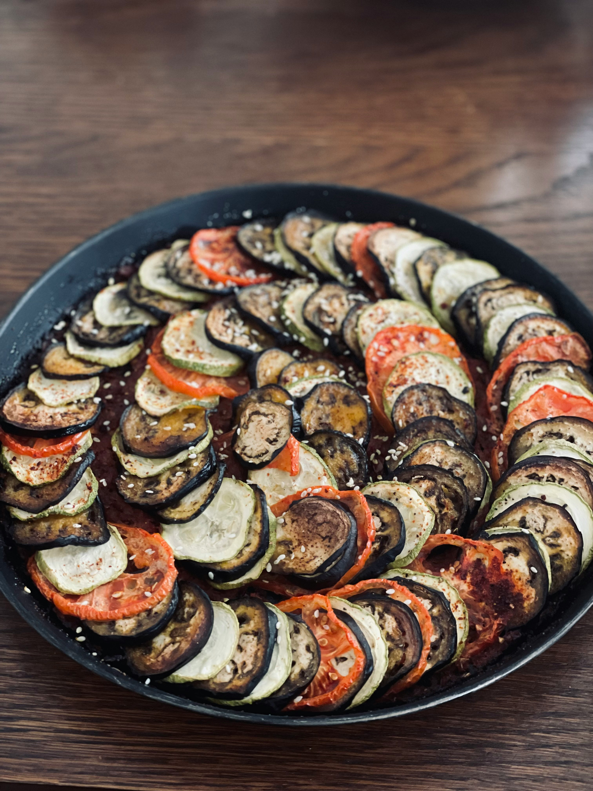

Homepage
Disney's Ratatouille

Description:
A delicious french savory and nostalgic classic made to be crafted at home.
Bring the disney famous dish to your own home with only a total time of 1.5 hours to create.
Colorful display of eggplant, zucchini, and summer squash bring out a new splash of color to your meal!
Ingredients:
- 1 (6 ounce) can of tomato paste
- 1/2 onion, chopped
- 1/4 cup minced garlic
- 3/4 cup of water
- 4 tablespoons of olive oil, divided
- salt and ground black pepper to taste
- 1 small eggplant, trimmed and very thinly sliced
- 1 zucchini, trimmed and very thinly sliced
- 1 yellow squash, trimmed and very thinly sliced
- 1 red bell pepper, cored and very thinly sliced
- 1 yellow bell pepper, cored and very thinly sliced
- 1 teaspoon fresh thyme leaves, or to taste
- (Optional) 3 tablespoons of mascarpone cheese